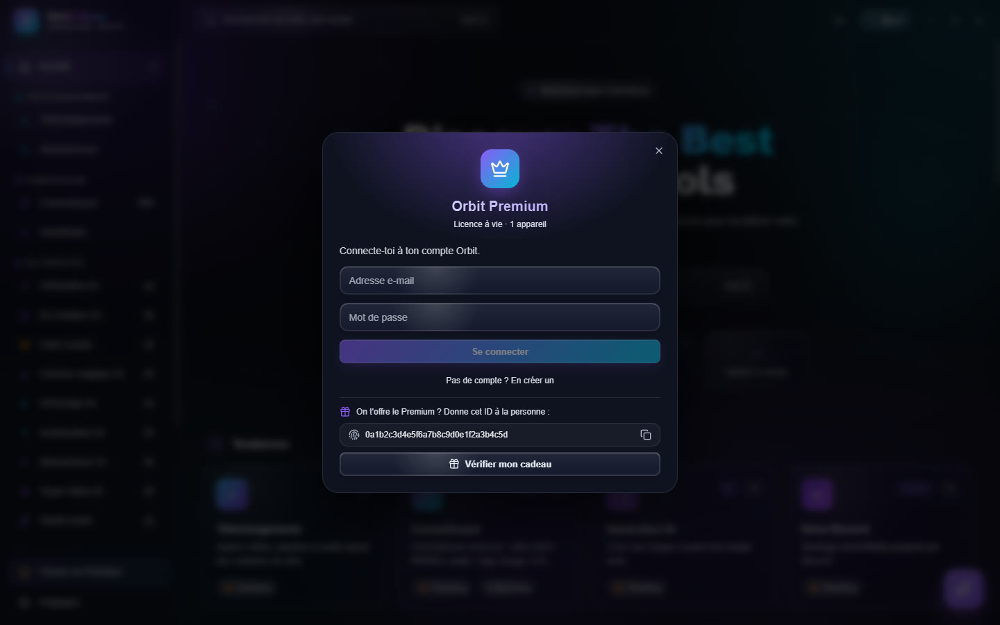

Orbit Premium
Orbit est gratuit. Orbit Premium débloque les outils IA les plus avancés, contre un paiement unique de 14,99 €, valable à vie sur 1 appareil.
Ce qui est inclus
| Gratuit | Premium |
|---|---|
| Téléchargements, Spotify, Twitch, hébergeurs, Abonnements | Génération IA |
| Convertisseur et HandBrake | Gomme magique IA |
| Boîte à outils et Médiathèque | Détourage IA |
| Studio Audio : débruitage, normalisation, extraction | Amélioration IA |
| IA Création 3D | Interpolateur IA |
| Paint a plate | Topaz Video AI |
| Drive Discord | Transcription |
| Assistant IA | Studio Audio : séparation en stems |
Un outil Premium reste visible : à l'ouverture, il affiche un écran verrouillé avec le bouton pour passer en Premium.
Acheter
- Cliquez Premium en bas de la barre latérale (ou Menu › Fichier › Passer en Premium).
- Créer le compte ou Se connecter à votre compte Orbit.
- Acheter — 14,99 € : le paiement s'ouvre dans votre navigateur (Stripe ; carte bancaire, ou PayPal selon votre pays).
- Revenez dans Orbit : le Premium se débloque tout seul dès que le paiement est confirmé.


Vous avez payé autrement (crypto) ou reçu une clé ? Payé en crypto ou reçu une clé ? puis Activer ma clé.
Offrir le Premium
Pour recevoir le Premium en cadeau, sans compte ni paiement : ouvrez la fenêtre Premium, copiez l'ID de votre appareil (sous « On t'offre le Premium ? ») et donnez-le à la personne qui vous l'offre. Une fois validé, cliquez Vérifier mon cadeau : Orbit s'active.
Bon à savoir
- Les outils Premium tournent sur votre PC ; une fois activé, le Premium fonctionne aussi sans connexion.
- Le Premium est lié à un seul appareil. Pour changer de PC, contactez le support.
- Le bouton en bas de la barre latérale affiche Premium actif quand tout est débloqué.